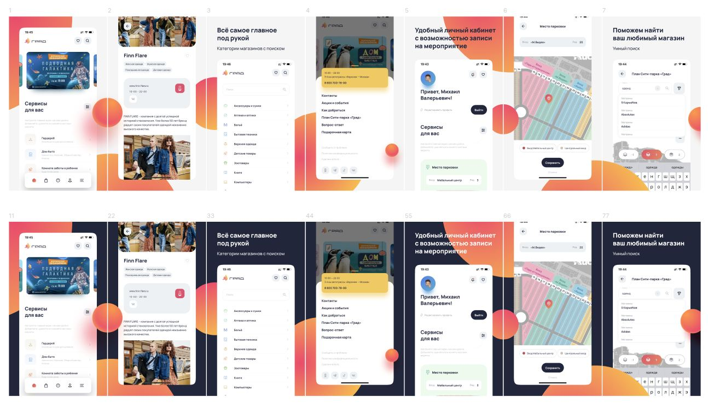
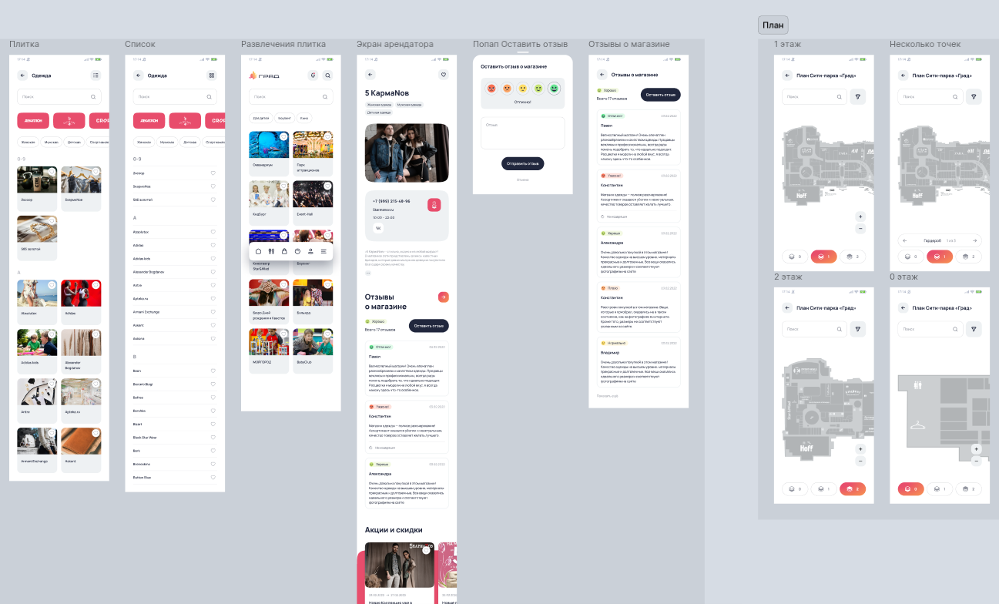
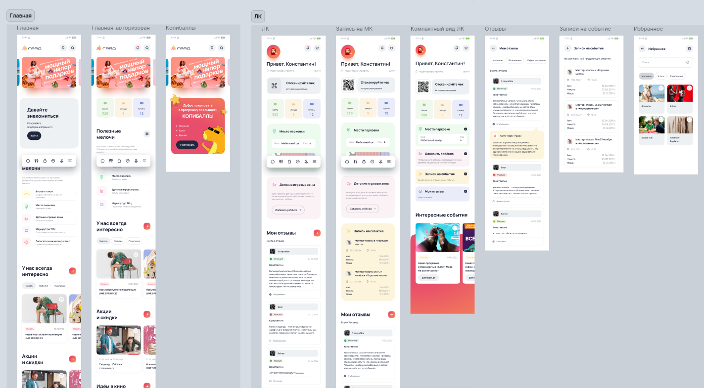
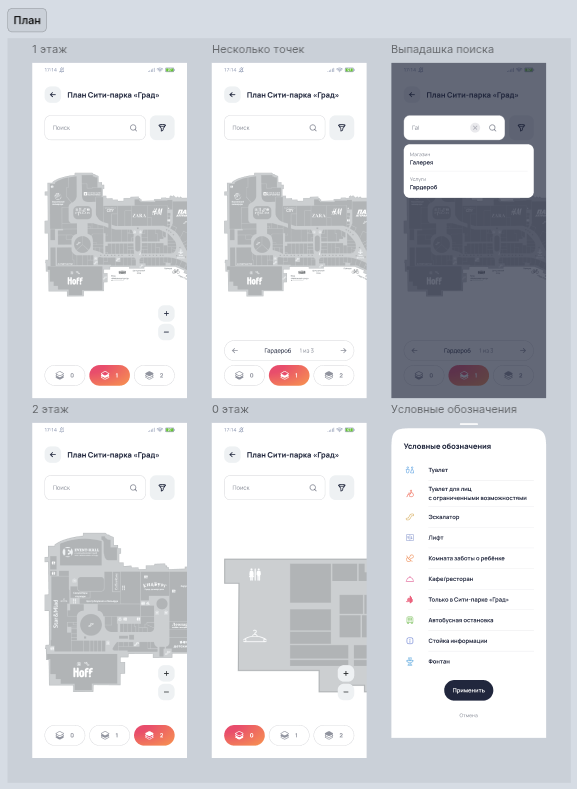
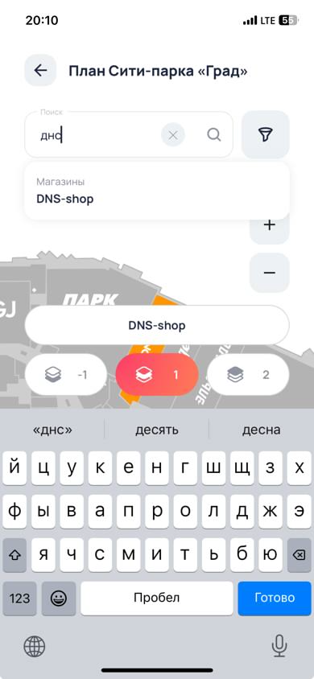
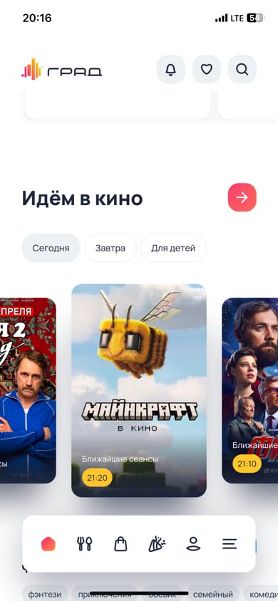
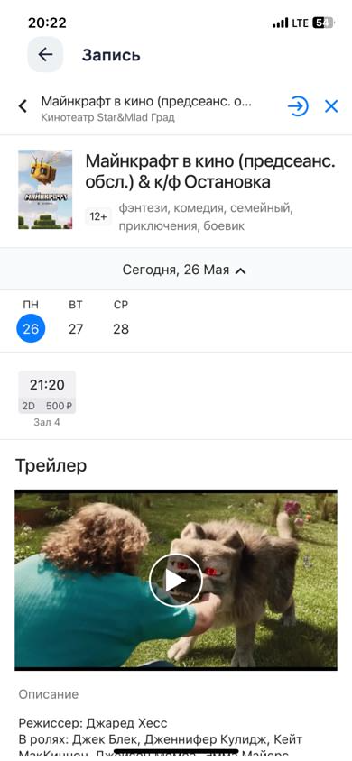
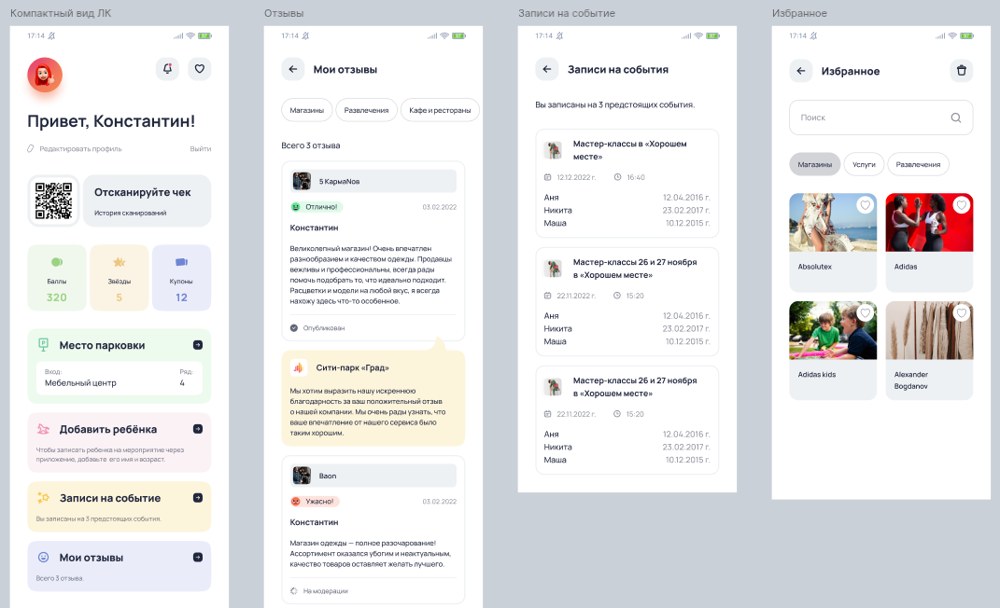
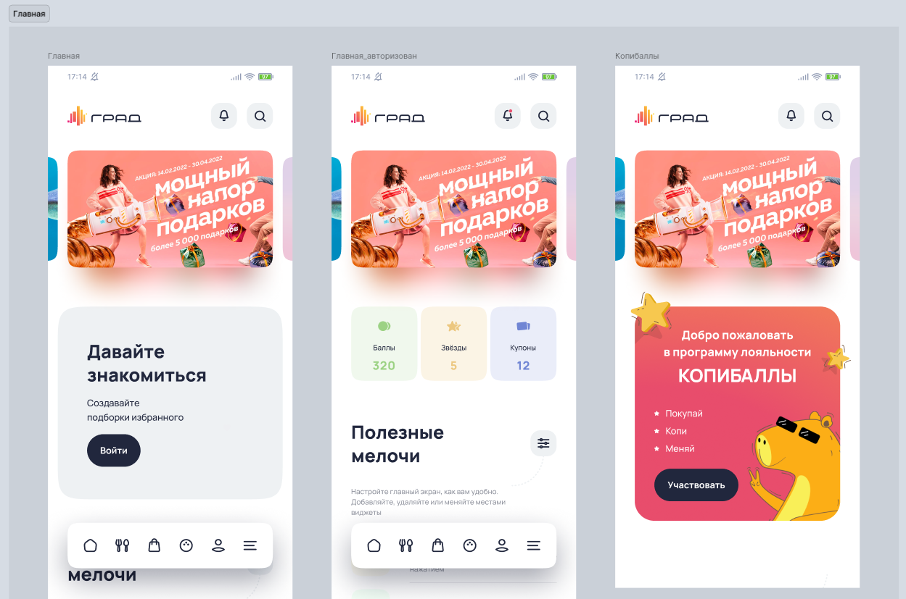
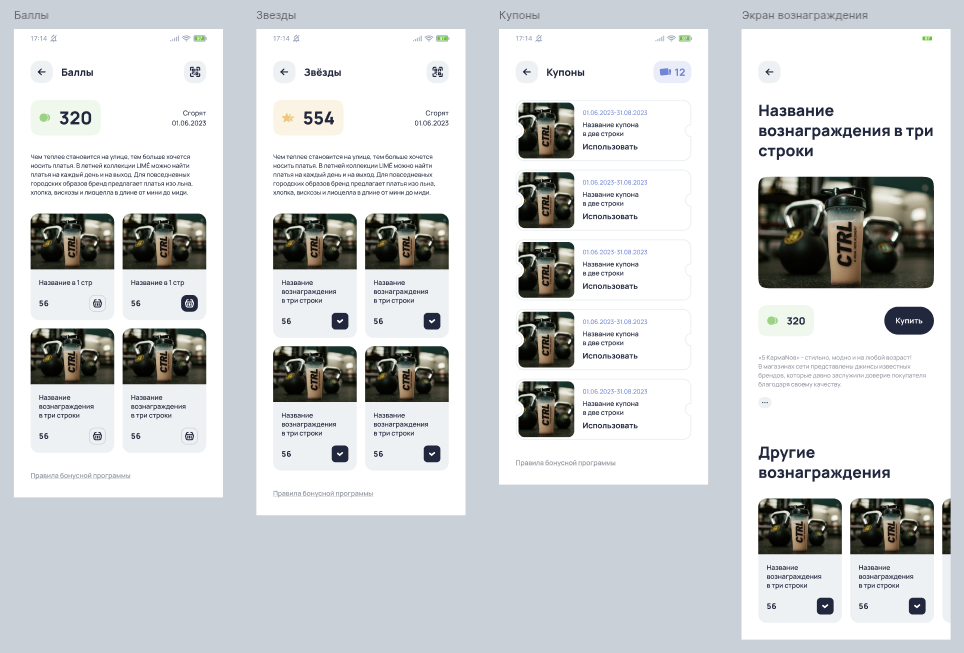

01
О проекте
Разработали мобильное приложение для ТРЦ Сити-парка «Град» — с картой, профилем, пуш-уведомлениями и системой лояльности. Оно стало удобной цифровой точкой входа для посетителей и усилило вовлеченность аудитории.
Разработать мобильное приложение для крупнейшего торгово-развлекательного центра в Воронеже — с удобной навигацией, персонализированным функционалом и системой лояльности, чтобы усилить вовлеченность посетителей и расширить цифровое присутствие бренда.

Разработали мобильное приложение для ТРЦ Сити-парка «Град» — с картой, профилем, пуш-уведомлениями и системой лояльности. Оно стало удобной цифровой точкой входа для посетителей и усилило вовлеченность аудитории.
Сити-парк «Град» — крупнейший торгово-развлекательный центр суперрегионального формата в Центральном Черноземье. ТРЦ Сити-парк «Град» лидирует сразу по нескольким направлениям: здесь расположен один из крупнейших в Европе крытых парков аттракционов, единственный в Центральном Черноземье океанариум, современный кинотеатр и концертный зал МТС Live Холл. Центр ориентирован на широкую аудиторию и сочетает в себе ритейл, развлечения и семейный отдых в одном месте.
Создать мобильное приложение для посетителей, которое сделает взаимодействие с центром удобным, быстрым и персонализированным. Главные цели: упростить навигацию, добавить полезные функции и запустить механики, которые будут стимулировать интерес посетителей.
На старте у клиента уже был сайт, разработанный на основе CMS 1С-Битрикс. Там — вся основная информация: магазины, акции, новости. Но получать эту информацию через браузер не всегда удобно. Мобильное приложение должно было закрыть этот пробел, сделав доступ к нужным данным быстрее и комфортнее.
Преимущества разработки мобильного приложения:
Интерфейс разработан на основе брендбука Сити-парка «Град», с учетом особенностей мобильных устройств. Главное — простота и понятность, чтобы пользователь легко находил нужную информацию: от интересующего кафе до расписания киносеансов.



Способом общения сервера с приложением был выбран классический REST API. Мы создали отдельный модуль на 1С-Битриксе и на его основе разработали полноценный интерфейс для интеграции с внешними системами. Модуль позволил организовать код в структуру, максимально приближенную к классическому виду фреймворка для написания веб-приложений.
В итоге через административную панель Битрикса можно управлять как сайтом, так и мобильным приложением. Мы расширили существующие инфоблоки и добавили новые — специально для мобильной версии.
Приложение разработано на Flutter — кроссплатформенном фреймворке от Google, стремительно набравшем популярность среди разработчиков и пользователей мобильных приложений.
Преимущества Flutter:
Мы доработали и перенесли ключевые блоки сайта в приложение:
После первой сборки мы провели внутреннее тестирование, уточнили контент и поведение интерфейса — и перешли к более сложной задаче: добавлению интерактивной карты, важного элемента любого ТРЦ.
Важно было не просто встроить карту из сайта, а реализовать умный поиск, чтобы посетитель мог быстро найти нужный магазин или локацию внутри ТРЦ.


В процессе разработки мы интегрировались с тремя разными сервисами по афише и продаже билетов. Было непросто — каждый сервис имел свои нюансы. Но мы довели систему до стабильной работы, обеспечив удобство для пользователей.


Основной функционал приложения был бы гораздо скромнее без создания профиля. Мы выбрали современный способ регистрации в один клик: достаточно иметь сим-карту и доступ в интернет. После регистрации открывается следующий набор взаимодействий:

Через некоторое время после запуска приложения появилась идея: поощрять активных посетителей ТРЦ и тем самым повышать вовлеченность. Так родилась «Копибаллы» — система начисления бонусов за покупки.
Это был серьезный шаг в развитии проекта. Он предполагал увеличение нагрузки на приложение, требовал определенной подготовки и соответствующих доработок.
Концепция программы очень проста:
Посетители делают покупки в ТРЦ;
Сканируют чеки в приложении;
Получают бонусы — и обменивают их на подарки.
Программа получила название «Копибаллы» и был разработан фирменный стиль в виде капибары в очках.
Бонусы начисляются после проверки чека через ФНС (дата, сумма, магазин). Начисленные баллы можно потратить в каталоге призов. Призы выдаются у стойки информации.
Разделы, добавленные в рамках реализации программы лояльности:
Общая информация о программе;
Каталог призов;
История операций;
Интерфейс для сканирования чеков.


Интеграция с EventGo позволила реализовать логику начислений и управления призами.
Работа шла слаженно: мы активно принимали участие в обсуждении и решении проблем, встречали открытие ТРЦ и мониторили запуск акции и поведение системы до самого закрытия.
Программа продолжает развиваться. Кроме основной программы лояльности «Копибаллы» периодически запускаются временные акции. Некоторые из них не требуют вмешательства и работают на уже существующей логике, а для некоторых нужен индивидуальный подход.
Сейчас, например, в разработке механика «Колесо фортуны», которую мы готовим специально ко дню рождения Сити-парка «Град» в августе. Обязательно расскажем об этом в новом кейсе!
Мы разработали красивое и удобное приложение для посетителей ТРЦ, которое помогло увеличить их количество, заинтересовав интересными механиками: от сканирования чеков и получения призов до умного поиска по карте любимого места.
Мы помогаем бизнесу превращать задачи в удобные и продуманные решения — от приложений и сайтов до сложных систем лояльности и интеграций. Посмотрите другие кейсы NUTS, чтобы лучше понять наш подход, и приходите обсуждать проект — разберемся, подскажем, предложим.Единственный в Центральном Черноземье океанариум


Хотим выразить искреннюю благодарность команде Nuts Digital Agency за профессионализм и высокое качество работы при разработке мобильного приложения.